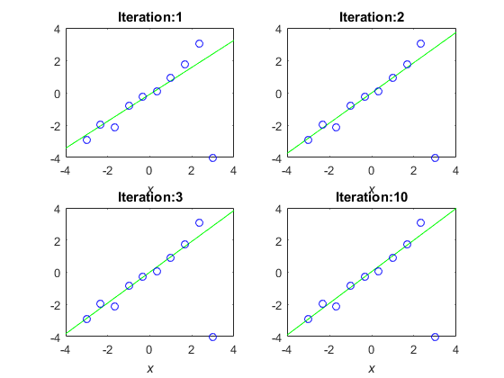
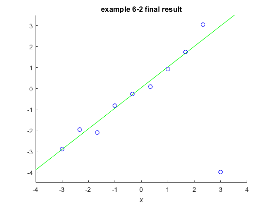
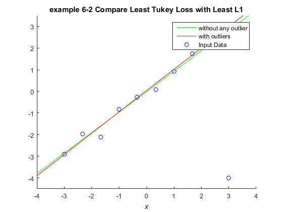

Example 6.1 Least Tukey Loss Regression & Least L1 Regression
- Result in book : Figure 6.8(e = 1), Figure 6.3(e = 0.01)
- Code in book : Figure 6.9
- Output : eg6_2_A.png, eg6_2_B.png, eg6_2_C.png
- Usage : eg6_2(), eg6_2(10, 1000)
Contents
Source Code
function eg6_2(n, N)
rng(0);
if nargin < 2
n = 10; N = 1000;
end
x = linspace(-3, 3, n)';
X = linspace(-4, 4, N)';
y = x + 0.2 * randn(n, 1);
y(n) = -4;
figure('Name', 'example 6-2 A'); clf; hold on;
p(:, 1) = ones(n, 1);
p(:, 2) = x;
P(:, 1) = ones(N, 1);
P(:, 2) = X;
t0 = p \ y;
e = 1;
id = 1;
for o = 1 : 1000
r = abs(p * t0 - y);
w = zeros(n, 1);
w(r <= e) = (1 - r(r <= e) .^ 2 / e ^ 2) .^ 2;
t = (p' * (repmat(w, 1, 2) .* p)) \ (p' * (w .* y));
if norm(t - t0) < 0.001, break, end
if (o <= 3)
plotFigure(2, 2, id, num2str(o), X, P * t, x, y);
id = id + 1;
end
t0 = t;
end
plotFigure(2, 2, id, num2str(o), X, P * t, x, y);
saveas(gcf, 'eg6_2_A', 'png');
figure('Name', 'example 6-2 B'); clf; hold on;
axis([-4 4 -4.5 3.5]);
plot(X, P * t, 'g-', x, y, 'bo');
setFigure(gca, 'example 6-2 final result');
saveas(gcf, 'eg6_2_B', 'png');
e = 1;
y(n) = x(n) + 0.2 * randn;
for o = 1 : 1000
r = abs(p * t0 - y);
w = zeros(n, 1);
w(r <= e) = (1 - r(r <= e) .^ 2 / e ^ 2) .^ 2;
t1 = (p' * (repmat(w, 1, 2) .* p)) \ (p' * (w .* y));
if norm(t1 - t0) < 0.001, break, end
t0 = t1;
end
y(n) = -4;
for o = 1 : 1000
r = abs(p * t0 - y);
w = zeros(n, 1);
w(r <= e) = (1 - r(r <= e) .^ 2 / e ^ 2) .^ 2;
t2 = (p' * (repmat(w, 1, 2) .* p)) \ (p' * (w .* y));
if norm(t2 - t0) < 0.001, break, end
t0 = t2;
end
F1 = P * t1;
F2 = P * t2;
err = max(F1-F2)
figure('Name', 'example 6-2 C'); clf; hold on;
axis([-4 4 -4.5 3.5]);
plot(X, P * t1, 'g-', X, P * t2, 'r-', x, y, 'bo');
legend('without any outlier', 'with outliers', 'Input Data');
setFigure(gca, 'example 6-2 Compare Least Tukey Loss with Least L1');
saveas(gcf, 'eg6_2_C', 'png');
end
err =
0.1095
  